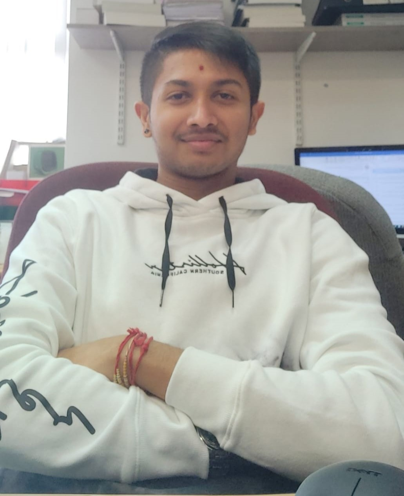

Yash ParbatHi. I am from Mombasa,Kenya which is in East Africa. Having no prioir coding experience I am quite excited to have attended the bootcamp and learnt a lot over the past few days. Bootcamp, in my opinion, was a great way to familirise with what to expect in the coming future as far as the course is concerned. |
 |
|
|
|
Bootcamp 2021: Drawing StarsMy first programming project, concluding the 2 week Programming Bootcamp at City (2021). This Processing project demonstrates what I have learnt during the bootcamp and for this project mostly the use of loops,methods and randomness. I created a star which is drawn by altering the position of lines and changed the colour of the lines to make it more decorative. Check out the code on Github: Link to github | Watch a video of my project: Link to Video |
Spring ProjectFor my spring project I made a game called "Egyptian Block Breaker".This game adopts all the concepts we learnt in the lectures and some concepts I learnt over the internet. It was really fun trying out new things, while trying to explore the possibilites of the city engine library. During the development of this project one of the most difficult challenges I faced was spending hours trying to fix bugs in my code so that the game could work flawlessly. All in all it was a good experience to learn a new programming language. | |